Domestic Water Treatment Solution
Your Family's Health is Our Priority
At Norwa Africa, we understand that the quality of your water is directly linked to your family's health and well-being. Whether your water comes from a municipal supply or a private borehole, we offer reliable and effective solutions to tackle any impurity, ensuring your water is safe for drinking, cooking, and all household uses.
Tap & Municipal Water Purification
From simple under-sink filters to comprehensive whole-house systems, we have the right solution to ensure your tap water is exceptionally pure. Click on a system below to learn more.

Single Stage Filtration System
An energy-saving, compact, and easy-to-operate solution for immediate access to cleaner water. Ideal for under-sink or tabletop placement.
Key Features:
- Filter Options: Choose your ideal filter:
- Sediment Filter: Removes dirt, rust, and solid particles.
- Carbon Filter: Removes 98% of chlorine, pesticides, and organic chemicals.
- Block Carbon: Reduces fine sediment, odor, and improves taste.
- Water Flow: 1.5 L/Min
- Dimensions: 500 x 300 x 360mm
- Certified for use with potable water.

Double Stage Filtration System
Get double the filtration power for even cleaner water. This system combines two filter types for a more thorough purification process, perfect for removing both sediment and chemicals.
Key Features:
- Two-Stage Process: Typically combines a sediment filter (Stage 1) with a carbon filter (Stage 2) for comprehensive purification.
- Enhanced Purity: Effectively removes dirt, rust, chlorine, bad taste, and odors.
- Water Flow: 1.5 L/Min
- Dimensions: 500 x 300 x 360mm
- Energy saving and environmentally friendly.

Triple Stage Filtration System
A robust solution providing three stages of filtration for superior water quality. This system ensures thorough removal of a wide range of contaminants, delivering clear, great-tasting water.
Key Features:
- Three-Stage Process: Combines sediment, granular carbon, and block carbon filters to remove particles, chlorine, organic chemicals, odors, and improve taste.
- Premium Quality: Provides an excellent defense against common tap water impurities.
- Water Flow: 1.5 L/Min
- Dimensions: 500 x 300 x 360mm
- Available in under-sink and tabletop models.
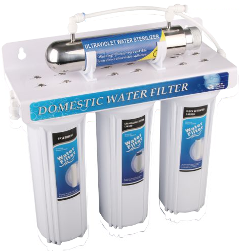
Triple Stage Filtration with UV Sterilization
The ultimate in tap water safety. This system combines our powerful three-stage filtration with an Ultraviolet (UV) sterilizer to destroy 99.9% of bacteria, viruses, and other harmful microorganisms.
Key Features:
- Three-Stage Filtration: Removes sediment, chlorine, chemicals, and improves taste/odor.
- UV Sterilizer (Stage 4): A chemical-free final stage that destroys bacteria and viruses with powerful UV rays, ensuring your water is microbiologically safe.
- Total Protection: Delivers physically clean, chemically pure, and microbiologically safe water.
- Water Flow: 1.5 L/Min
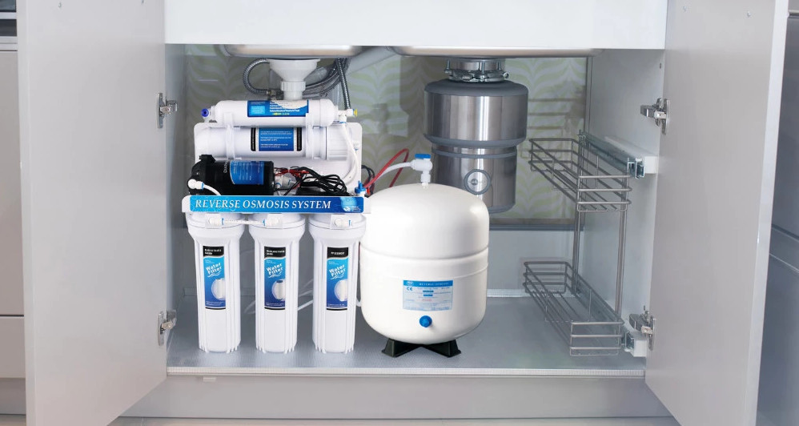
Whole-House RO Purification System (400L/Day)
This advanced system uses Reverse Osmosis (RO) technology to provide the highest level of purification, removing up to 99% of dissolved contaminants from your water.
Treatment Process:
- Pre-filtration: Sediment and carbon filters remove chlorine and particles.
- RO Membrane: Separates dissolved salts, heavy metals, and other impurities.
- Storage: Purified water is stored in a pressurized tank.
- Polishing Filter: A final carbon filter enhances taste.
- UV Sterilization: An optional final stage kills any remaining microorganisms.
Borehole & Well Water Purification
Turn your borehole or well water into a source of pure, safe, and great-tasting water for your entire home. Our Reverse Osmosis (RO) systems are specifically designed to tackle the tough contaminants found in groundwater.
Domestic Under-Sink RO Unit (100 GPD)
A compact and highly effective under-sink Reverse Osmosis system perfect for providing purified drinking and cooking water directly from your tap. It uses a multi-stage process to ensure the highest quality water.
The Treatment Process:
- Sediment Filter: Removes dirt, rust, and other solid particles.
- Granular Carbon Filter: Removes 98% of chlorine and organic chemicals.
- Block Carbon Filter: Removes residual taste, odor, and fine particles.
- RO Membrane: The core of the system, separating 70-90% of dissolved contaminants.
- Storage Tank: Stores pure water, ready on demand.
- Polishing Filter: A final carbon filter enhances the taste before it reaches your tap.
- UV Sterilizer (Optional): Kills viruses and microorganisms for ultimate safety.
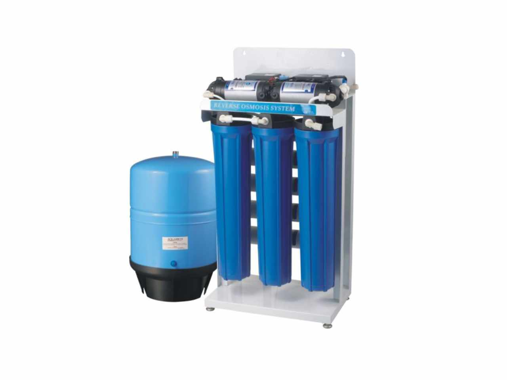
Whole-House RO Purifier (400 GPD)
A powerful solution designed to purify water for your entire household, producing up to 1500 liters per day. This system is ideal for homes relying on borehole or well water, ensuring every tap delivers pure water.
System Features:
- High Output: Produces up to 400 Gallons Per Day (1500 Liters).
- Pressure Tank: Includes an 11-gallon plastic storage tank.
- Monitoring: Comes with a digital display and pressure gauge.
- Pre-Filtration: Includes standard PP and block carbon filter housings.
- Power: Universal voltage support (100~240V, 50/60HZ).
Domestic Accessories & Filters
Find the right high-quality filters and accessories to maintain your water purification system and ensure peak performance. Select a category below to see our available products.
Sediment Filters
Designed for the effective removal of sand, silt, rust, and other suspended particles from your water.
Wound & Spun Slim Filters
| Type | Size | Max Flow Rate (LPH) | Micron Rating |
|---|---|---|---|
| Wound/Spun Polypropylene | 10" | 500 - 1,000 | 0.5, 1, 5, 10+ |
| Wound/Spun Polypropylene | 20" | 1,000 | 1, 5, 10+ |
| Wound/Spun Polypropylene | 30" | 3,000 | 0.5, 1, 5+ |
| Wound/Spun Polypropylene | 40" | 4,000 | 0.5, 1, 5+ |
Wound & Spun Jumbo Filters
| Type | Size | Max Flow Rate (LPH) | Micron Rating |
|---|---|---|---|
| Wound/Spun Jumbo | 10" | 1,500 - 3,000 | 0.5, 1, 5, 10+ |
| Wound/Spun Jumbo | 20" | 3,000 - 6,000 | 0.5, 1, 5, 10+ |
Bacteria & Sediment Filters
Provides ultrafiltration for removing fine particles, microorganisms, and bacteria, reducing the risk of waterborne diseases. Some types are cleanable.
Pleated Filters (Slim & Jumbo)
| Type | Size | Max Flow Rate (LPH) | Micron Rating |
|---|---|---|---|
| Pleated Polypropylene | 10" | 500 | 0.22, 0.45+ |
| Pleated Polypropylene | 20" | 1,000 | 0.22, 0.45+ |
Ceramic Filters
| Type | Size | Max Flow Rate (LPH) | Micron Rating |
|---|---|---|---|
| Ceramic | 10" | 500 | 0.9 |
Chemical & Odor Filters (Carbon)
Removes most organic chemicals, chlorine, insecticides, pesticides, and herbicides. Greatly improves water taste and odor.
Granular Activated Carbon (GAC) Filters
| Type | Size | Max Flow Rate (LPH) | Micron Rating |
|---|---|---|---|
| GAC (Slim) | 10" / 20" | 500 / 1000 | 5 |
| GAC (Jumbo) | 10" / 20" | 1500 / 3000 | 5 |
Block Activated Carbon (CTO) Filters
| Type | Size | Max Flow Rate (LPH) | Micron Rating |
|---|---|---|---|
| CTO (Slim) | 10" / 20" | 500 / 1000 | 5 |
| CTO (Jumbo) | 10" / 20" | 1500 / 3000 | 5 |
Hardness Filters (Resin)
Uses an ion exchange process to remove calcium and magnesium ions, the minerals responsible for hard water, preventing scale buildup and improving soap efficiency.
Resin Slim Filters
| Type | Size | Max Flow Rate (LPH) |
|---|---|---|
| Resin | 10" | 500 |
| Resin | 20" | 1000 |
Iron Removal Filters (Katalox)
An oxidizing filter designed for iron and manganese reduction. It converts soluble ferrous iron (Fe²⁺) into insoluble ferric iron (Fe³⁺), which is then filtered out by the media.
Katalox Slim Filters
| Type | Size | Max Flow Rate (LPH) |
|---|---|---|
| Katalox | 10" | 500 |
| Katalox | 20" | 1000 |
Domestic RO Fittings & Accessories
A complete range of high-quality components, from UV system essentials to pneumatic fittings, pipes, and tools for your domestic water purifier systems.
UV System Components
Essential parts for maintaining your UV water purifier, which exposes organisms like bacteria and viruses to a germicidal ultraviolet wavelength.
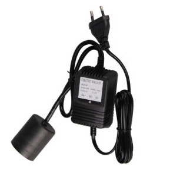
UV Adaptor
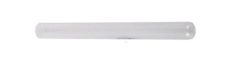
UV Sleeve
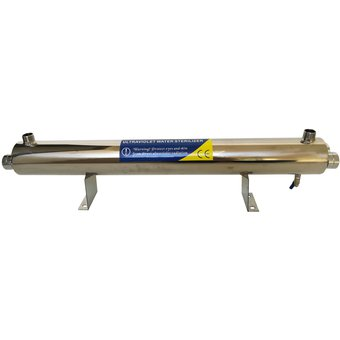
UV Chamber
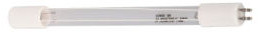
UV Lamp
General Fittings & Accessories
We have pneumatic fittings, tools, and parts used to connect sections of pipe, tube, and hose in domestic and commercial water purifier systems.
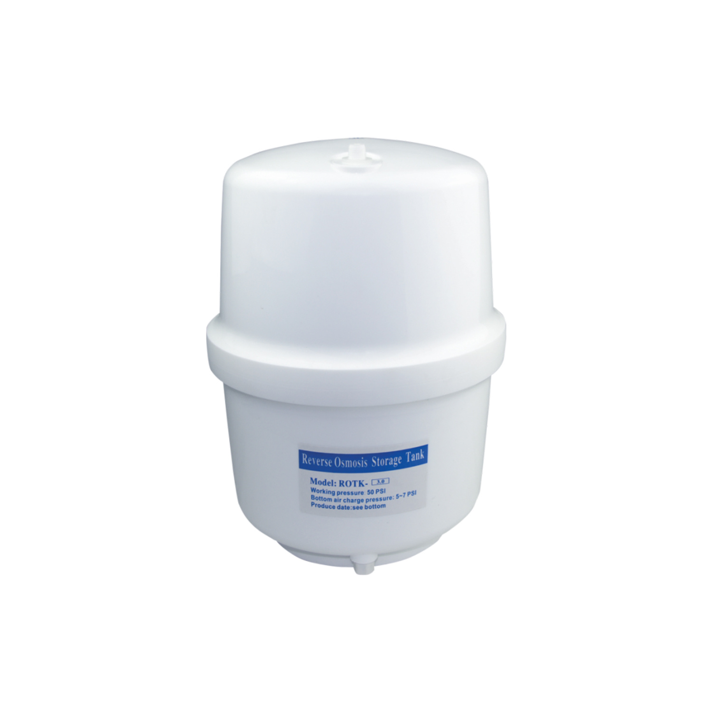
Storage Tank
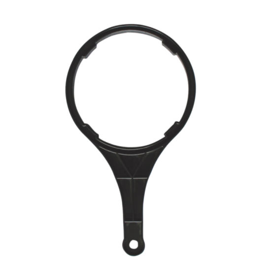
Wrench for Filter Housing
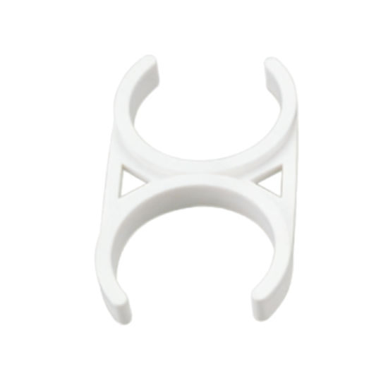
Clamps
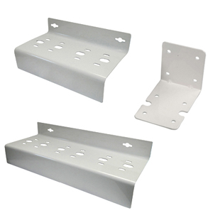
Bracket for Filter Housing
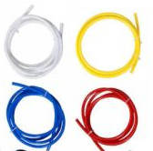
Pipes
6 - 12 mm
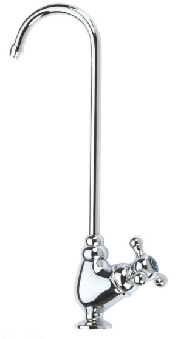
Faucet Tap
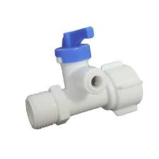
Diverter Valve
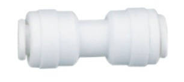
Straight Connector
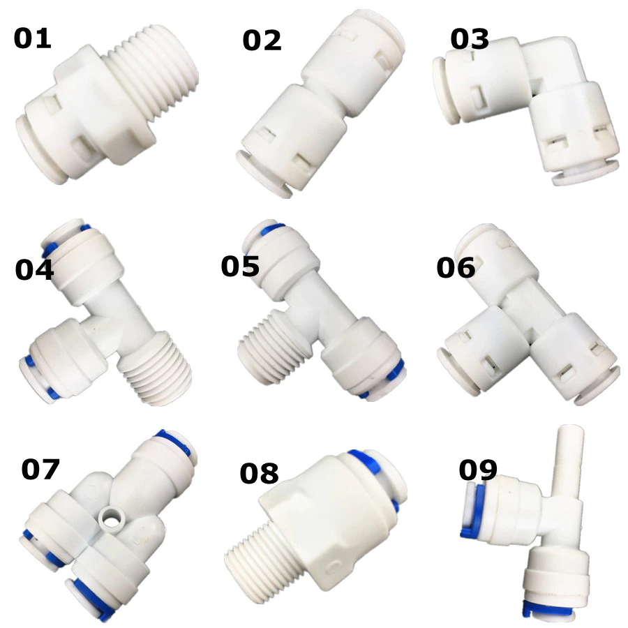
Male Adaptor
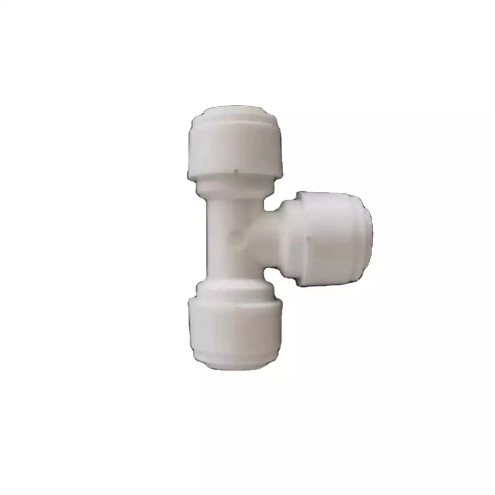
Tee Adaptor
Female Adaptor
Ready for Pure Water at Home?
Contact our specialists today for a free consultation and find the perfect water treatment solution for your family.
Get in Touch